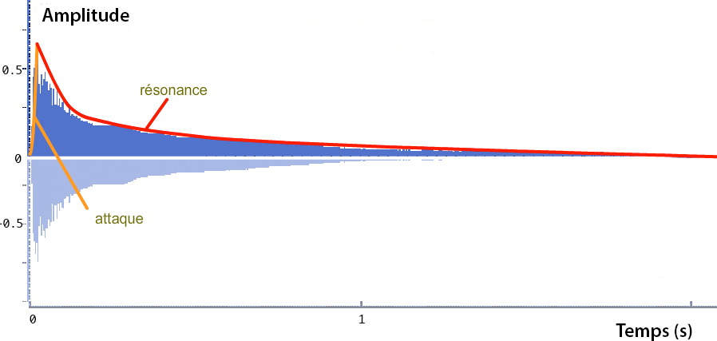

Les paramètres du son
La forme d'onde
On peut l'observer avec une représentation "Pression/temps" à l'échelle de la milliseconde environ, qui permet d'observer les variations de l'amplitude du son au cours du temps.

La hauteur
L'observation de la forme d'onde permet de repérer la période du son (pour les sons harmoniques).
La périodicité de la vibration
La période T exprimée en seconde est l'inverse de la fréquence de la vibration : f = 1/T
La longueur d'onde (en mètres) lambda = c x T = c / f (c étant la célérité ou vitesse du son = 340 m/s)

La hauteur perçue
Pour un son pur, la hauteur est liée à la fréquence de la vibration (ex : La3 : 440 Hz, f/mc).
Pour un son harmonique, la hauteur est liée aux rapports de fréquences entre les partiels et non à la fréquence la plus basse. La fondamentale peut être absente sans qu'on perde la notion de hauteur.
Le programme Faust suivant permet d'activer ou non la fondamentale d'un son harmonique :
Grave ou aigu
Indépendamment de la hauteur du son, le timbre peut être grave ou aigu. Cette notion est liée à la répartition de l'énergie dans le spectre (vers les aigus ou vers les graves).
L'amplitude
On dispose de plusieurs grandeurs : la pression sonore (N/m2), l'intensité (l'énergie, proportionnelle au carré de la pression, en W/m2) et la puissance acoustique (Watt).
L'oreille peut détecter des sons correspondant à des variations de la pression de l'air inférieures à un milliardième de fois la pression atmosphérique. Elle peut supporter jusqu'à un millième de fois la pression atmosphérique (soit un million de fois plus). Les écarts de pressions entre un son fort et un son faible sont donc énormes et cette échelle ne correspond pas à la perception que l'on a du volume sonore (ou niveau sonore). Des tests d'écoute montrent que la sensation subjective de niveau sonore Lp (Loudness) est reliée au logarithme de la pression P (ou de l'intensité).
(avec P : pression efficace et P0 : pression de référence à 0dB).
La pression efficace (root-mean square) est égale à la racine carrée de la valeur moyenne du carré de la pression.
Le niveau de pression sonore (SPL : Sound Pressure Level) est donc exprimé en décibel (dB), une échelle logarithmique :
| Pression (N/m2) | 0.00002 | 0.0002 | 0.002 | 0.02 | 0.2 | 2 | 20 |
| Niveau (dB) | 0 | 20 | 40 | 60 | 80 | 100 | 120 |


Lorsque la pression sonore est multipliée par 2, la sensation augmente d'une valeur constante : le niveau gagne +6dB.
Lorsque deux sources d'égale puissance jouent ensemble, la pression n'est pas multipliée par 2. Le niveau gagne seulement +3dB. Pour doubler la pression et avoir un niveau de +6dB, il faut quatre sources (quatre violons jouent deux fois plus fort qu'un seul violon). Toutefois pour avoir une sensation de volume sonore deux fois plus fort, il faut augmenter le niveau de +10dB.
Enfin, la sensation de volume sonore (loudness en anglais) dépend également de la fréquence du son. Cette sensation est beaucoup moins importante, à pression égale, pour des sons graves (< 200 Hz) que pour des sons entre 300 et 7000 Hz (zone correspondant à la parole) : voir la section "Réception du son"
Quand on s'éloigne de la source sonore, si on double la distance, le niveau sonore perd 6dB.
L'enveloppe d'amplitude
Elle indique les variation de l'amplitude du son en fonction du temps. Elle comporte souvent plusieurs phases : l'attaque, une première décroissance (decay), le maintien (sustain), qui correspond à l'entretien du son, et la chute (release), lorsque le son n'est plus entretenu.

Le programme Faust suivant implémente un synthétiseur basé sur une onde en dent de scie contrôle par une envelope ADSR :
Les transitoires
Ils correspondent à des états non stationnaires d'un son (par exemple l'attaque d'un son). Ils jouent un rôle très important dans la reconnaissance des instruments.
Le spectre
C'est un graphique qui représente la répartition de l'énergie du son selon les fréquences. Il est obtenu après l'analyse (FFT) d'un son à un instant donné, sur une certaine durée (fenêtre). Il permet de mettre en évidence les partiels du son.
Étude d'un son de guitare
Son de guitare, note La3 :
Enveloppe d'amplitude du son

L'onde sonore

Le spectre

Le spectre peut être représenté en dB (à gauche) ou en amplitude linéaire à droite. En amplitude linéaire, le graphe met en évidence les partiels les plus intenses seulement. Le graphe en dB est plus proche de la perception.
Le spectre de la guitare (réalisé juste après l'attaque) montre un série de partiels équidistants, tous multiples de 440Hz (la fondamentale). Quelques partiels non harmoniques sont également présents (en dessous de 300 Hz notamment) qui sont des partiels transitoires (disparaissent très vite).
Le sonagramme